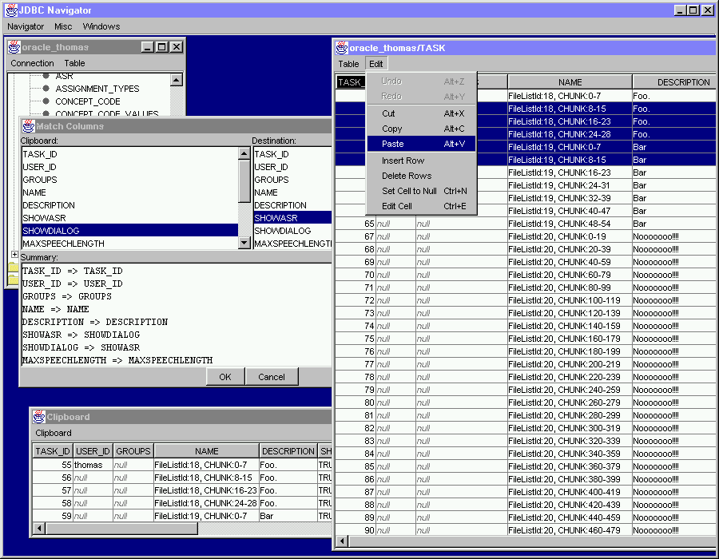

JDBC Navigator
A free database browser and editor
JDBC Navigator is a free database browser and editor. It lets you open JDBC
database connections, browse schemas and tables, traverse relations by
finding rows referencing a row's primary key, traverse relations by finding
rows referenced by a row's foreign keys, edit table data (inserting new
rows, and editing or deleting existing rows). When you edit two or more
related tables, JDBC Navigator will automatically commit all edits in the
right order so as not to violate any constraints at any time.
JDBC Navigator runs interactive queries and table loading operations in the
background, so the application stays responsive while the query is in
progress; you can pause or cancel an incomplete query at any time, and you
can also edit incompletely-loaded tables without having to wait for the
query to finish.
You can copy and paste rows between tables; when you perform the paste
operation, you can specify how to map the source table's columns to the
destination's. You can also save the contents of a table to a CSV file,
which you can import into Microsoft Excel or other spreadsheet programs,
and you can import CSV files into a table; when you perform the import, you
can specify how to map the file's columns to the table's.
You can create snapshots of tables or sets of tables, and you can save
those snapshots to disk. Snapshots act like read-only databases; you can
browse them just like a regular JDBC connection.
You can compare two databases, and generate SQL scripts that will transform
one database into the other (as long as they have identical table
structures), or generate scripts that will re-create a schema from scratch.
You can use these scripts as a platform-neutral way of copying tables from
one database to another, assuming that the target database has a facility
to run SQL scripts.
You can also open a SQL window where you can interactively type SQL
statements, rather like a terminal, except the window is also a text editor
so you can easily tweak your statements and rerun them, and save them to
disk so you can reuse them later.
There's also an embedded JavaScript interpreter, which you can use to load
tables, edit their contents, and query their meta-data; the JavaScript
interpreter allows you to access the same underlying data objects that are
displayed on the screen, so you can load tables interactively, then
manipulate their data using JavaScript procedures, and so on. You can also
run SQL commands from JavaScript code, using the provided embedding of the
java.sql.Statement, java.sql.PreparedStatement,
and java.sql.CallableStatement interfaces. See here for details.
Compatibility: JDBC Navigator supports
DB2,
Derby,
MySQL,
Oracle,
PostgreSQL,
SmallSQL,
and Transbase.
Interested? Download jdbcnav.jar, which
contains JDBC Navigator and Rhino (a free-as-in-speech
JavaScript engine, used by JDBC Navigator).
In addition to this, you will need JDBC drivers for your databases. These
should be provided by your RDBMS vendor. For Oracle, the file to look for
is called classes12.zip or classes12.jar.
Did I mention JDBC Navigator is a Java application? You will need Java to
run this thing; Sun's JDK or JRE,
version 1.4 or later, will do the job.
How to use: put jdbcnav.jar wherever you like; cd to that
directory and say
java -jar jdbcnav.jar
Alternatively, you may also be able to launch JDBC Navigator by simply
double-clicking the jdbcnav.jar icon in the Windows Explorer or Macintosh
Finder.
Before opening any database connections, you will have to tell JDBC
Navigator how to find your JDBC drivers. To do this, select
Preferences from the Navigator menu, and add the
drivers' zip or jar files to the Class
Path list.
If you are accessing multiple databases, and some of those databases are
different versions of one vendor's product (e.g., you want to access an
Oracle 8 and an Oracle 9 database at the same time), you may experience
problems if you try to put each of the applicable versions of that vendor's
JDBC driver in the classpath at the same time. To avoid these problems,
always use the most recent version of that vendor's JDBC driver in such
cases. (Again assuming you want to access Oracle 8 and Oracle 9 databases
simultaneously, don't use the Oracle 8 and Oracle 9 drivers at the same
time; the Oracle 9 driver knows how to talk to Oracle 8 databases, so just
use that one, and don't put the Oracle 8 driver in the classpath.)
This version of JDBC Navigator (build 2450, dated 7 Dec 2005) is
available free-as-in-speech (GNU Copyleft). You can download the source
code (jdbcnav.tgz) and tinker with it
yourself if you wish.
Project Status:
Development HISTORY.
Plans for the future: my TODO list.
Questions? Comments? Suggestions? Bug reports? Contact me, Thomas Okken, at
 .
.
Quick Tour
The following screen shots were taken while running JDBC Navigator under
Microsoft Windows. If you run it under a different operating system, the
look and feel of the user interface will be different (but the
functionality, and the user interface layout, will be the same).
You can select which look and feel you want to use by selecting
Preferences from the Navigator menu, and then
selecting the desired option from the menu in the top left corner of the
dialog.
Opening a connection, browsing tables, manipulating table data using
the embedded JavaScript interpreter

Detailed information about table structure and primary and foreign
keys

Generating SQL scripts to update or rebuild a set of tables

Copying and pasting rows between tables, reshuffling columns as
desired

Importing/exporting from/to CSV files
Finding rows that reference, or are referenced by, another row

Back to Thomas Okken's Projects home page